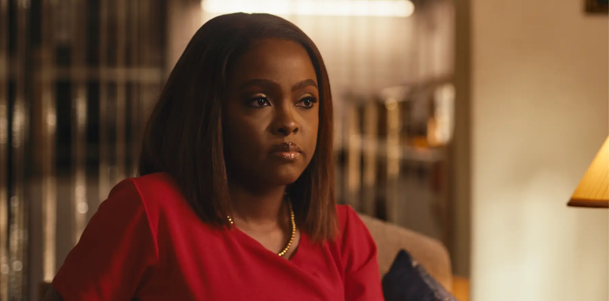
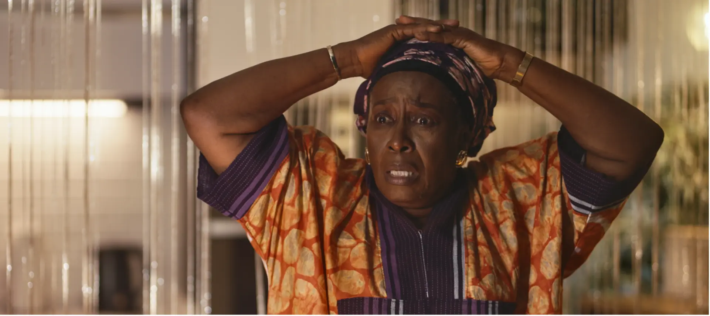
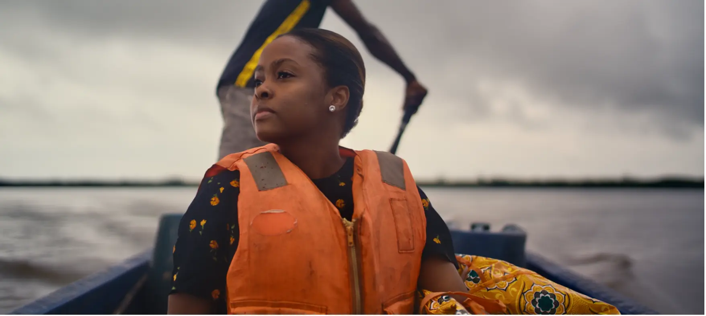
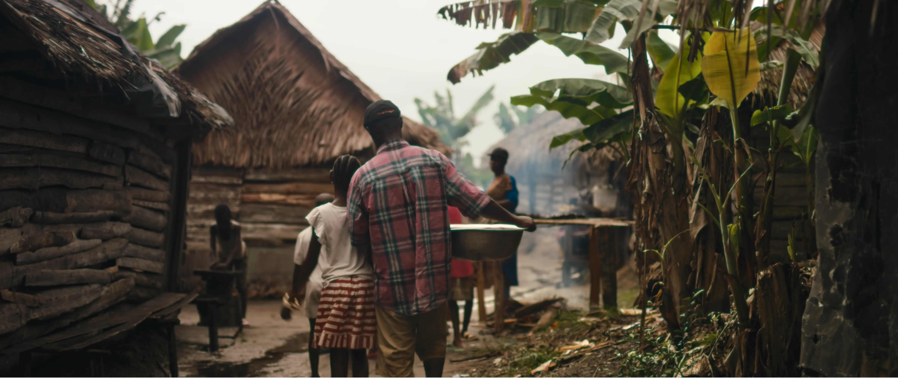

Feature Film
Onobiren




- Director of PhotographyDa'anong Gyang
- DirectorFamous Odion Iraoya
- Writer / Executive ProducerLaju Iren
- CastRuby Akubueze, Bisola Aiyeola, Deyemi Okanlawon, Patience Ozokwor, Norbert Young, Desmond Bryce, Temitope Tanpe Aje, Chude Jideonwo
- ProductionLaju Iren Films
Onobiren — meaning "woman" in Itsekiri — follows Roli, who arrives in Lagos from Warri under the weight of tradition and expectation. When she chooses her own path, driven by purpose, survival, and her fishing roots, something unexpected happens: women support women.
Shot across Warri and Lagos. Selected for Entertainment Week Africa and the London Lift Off Festival.